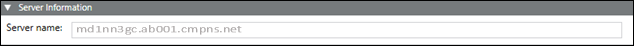
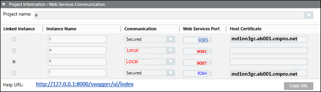
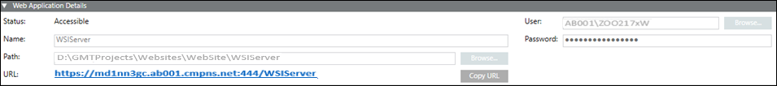

Web Services Application Creation and Modification
In the SMC tree, when you select Websites > [Website name], click  and select Create Web Services Application, you can create and configure web services application using the following expanders:
and select Create Web Services Application, you can create and configure web services application using the following expanders:
Server Information Expander
This expander by default displays the Server name where you are creating the web services application. You cannot edit it.

Project Information: Web Services Communication Expander
This expander allows you to select and link a WSI instance of a Server project to the web services application.

Web Application Details Expander
This expander allow you to configure the web services application details including the Name, Path, User, and Password.

- Name: Allows you to type the name of the web services application. Provide a unique name. All names (identifiers) are case sensitive and do not use blank.
Following special characters are not permitted in the web services application name:
‘\\', '/', '?', ';', ':', '@', '&', '=', '+', '$', ',', '|', ' " ', '<', '>'. - Path: Browse for the location on the disk where you want to store the web services application. The default is [installation drive:]\[installation folder]\[Websites folder]\[Website name].
Following special characters are not permitted in the web services application path:
'ä', 'ö', 'ü', '$', '@', '&', '<', '>', '{', '}', '[', ']', '(', ')', ';', ':', '=', '^', '|', '*', '!',
'/', '%', '?', ',', '\'', '"', '\t', ‘\\', '+' . - For path specifications, consider case sensitivity and do not use blanks.
- All identifiers have to start with an alphabetic character (characters "A...Z", "a...z", "_" and the digits "0...9") or with an underline "_" and may not contain any special characters.
- The use of umlauts "ä","ö", "ü" is allowed in many cases but we recommend to avoid using them as the corresponding keys might not be available during international use. Furthermore, the display might also be problematic in case of foreign-language systems.
- User: Browse and select a web services application user using the Select User dialog box.
NOTE 1: The web services application user should be a member of IIS_IUSRS group. If you select a user who is not a member of the IIS_IUSRS group, the SMC prompts you to add the user to that group.
NOTE 2: You can create a web services application with a user different from the website user.
NOTE 3: The user must also have Allow log on locally as Service right set. For more information, refer Cannot Create or Save Website in Troubleshooting Websites and Web Applications. - Password: Type the valid password of the selected user.

NOTE:
Once the web services application is created, if you click Edit  , you can modify the linked project. In case of an upgrade, of web application, if linked project is not upgraded then a message stating "Project needs to be upgraded before upgrading [web application]" displays.
, you can modify the linked project. In case of an upgrade, of web application, if linked project is not upgraded then a message stating "Project needs to be upgraded before upgrading [web application]" displays.